2.5. Data Processing¶
The model module is ShakeMap’s primary data processing module. It gathers data, performs quality control, and interpolates ground motions to a grid or pre-selected set of points.
The interpolation is performed by treating the ground motions as a conditional multivariate normal distribution (MVN). The MVN approach employed by ShakeMap is described in Worden et al., 2018. The specifics of ShakeMap’s implementation of this method are described below.
2.5.1. Ground-Motion Prediction¶
ShakeMap uses ground-motion prediction equations (GMPEs) to provide the
initial estimates of ground motions. The GMPEs are drawn from the set
of GMPEs implemented by the GEM OpenQuake project. The full list of
available GMPEs may be found
here.
In addition to these individual GMPEs, ShakeMap allows for a weighted
combination of two or more GMPEs. GMPEs are configured in ShakeMap
as GMPE “sets” (see gmpe_sets.conf and modules.conf for
information on the specification of GMPE sets; the GMPE set to use
is specified with the gmpe parameter of the model section of
model.conf) and are executed through its
MultiGMPE class.
The MultiGMPE class allows for smooth transitions between tectonic
environments, as well as consistency with the methodology of other
projects, such as the USGS National Seismic Hazard Mapping Project.
The MultiGMPE module uses a list of GMPEs and their weights to produce a weighted mean at each location:
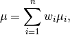
where  are the weights and 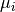 are the
individual means. Since the result is a mixture distribution,
the variances are given by:
are the weights and 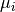 are the
individual means. Since the result is a mixture distribution,
the variances are given by:
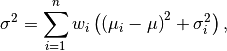
where  are the standard deviations of the corresponding
components of the mean. We note that while the mean will typically be
a smooth function with distance (all else being equal) this formulation
can lead to some unexpected features in the standard deviation field.
These features, however, tend to be fairly small in magnitude relative
to the overall standard deviation. For example Figure 1
shows the mean ground motion field computed from a 50-50 weighting of
the Abrahamson et al (2014) and the
Chiou and Youngs (2014) GMPEs. The
field smoothly decays with distance, as expected. In contrast, the
standard deviation field (Figure 2 displays an
unexpected oscillatory behavior. Upon inspection of the cross-section
plots, however,
we find that the oscillations are very small in magnitude.
are the standard deviations of the corresponding
components of the mean. We note that while the mean will typically be
a smooth function with distance (all else being equal) this formulation
can lead to some unexpected features in the standard deviation field.
These features, however, tend to be fairly small in magnitude relative
to the overall standard deviation. For example Figure 1
shows the mean ground motion field computed from a 50-50 weighting of
the Abrahamson et al (2014) and the
Chiou and Youngs (2014) GMPEs. The
field smoothly decays with distance, as expected. In contrast, the
standard deviation field (Figure 2 displays an
unexpected oscillatory behavior. Upon inspection of the cross-section
plots, however,
we find that the oscillations are very small in magnitude.
Figure 1: The mean ground motion field for a 50-50 combination of the Abrahamson et al (2014) and the Chiou and Youngs (2014) GMPEs.
Figure 2: The standard deviation of the ground motion field for a 50-50 combination of the Abrahamson et al (2014) and the Chiou and Youngs (2014) GMPEs.
If the requested IMT is PGV, and some of the selected GMPEs do not produce PGV, them those GMPEs are removed from the list and the list is re-weighted with the remaining GMPEs in accordance with their original proportional weights. If none of the GMPEs in a set produce PGV, then MultiGMPE computs 1.0 s spectral acceleration and uses the Newmark and Hall (1982) equations to convert to PGV.
The MultiGMPE class will also accept a second set of GMPEs and weights to use beyond a specified distance. A third set of GMPEs may be supplied if all of the GMPEs in the primary set do not support Vs30-based site amplification. The GMPEs in this set will be used to compute the site terms, which will then be applied to the results of the primary set.
In general, site amplifications are computed using a Vs30 grid supplied
by the operator (see the Vs30 parameters vs30file and vs30default
in the data section of model.conf for configuration information.)
Shakemap does not currently support operator-supplied basin depths. Some modern GMPEs use basin depths (typically “Z1.0” or “Z2.5”) as an additional site amplification term. These GMPEs typically also provide empirical correlation functions to convert from Vs30 to the desired depth parameter. Note that for some GMPE combinations, these factors will be inconsistent with one another. Ultimately we hope to include a facility for the operator to provide basin depth grids. In the meantime, see the next paragraph on generic amplification factors.
After the calculation of the mean ground motions, the generic
amplification factors, if any, are applied. The generic amplification
factors are additive (in natural log space) factors that are intended
to accommodate basin or topographic amplifications. The user-supplied
grids should taper to zero at the edges, and are assumed to be zero
everywhere outside of the supplied grid(s). See the module
shakemap.utils.generic_amp for more on the generic amplification
factors.
2.5.2. Ground Motion to Intensity Conversions¶
While ideally we would have cross-correlation functions available between macroseismic intenstiy and other IMTs (see Cross-correlation Functions), no such functions are generally available at this time. In their absence, we make use of ground motion to intensity conversion equations (GMICEs). This situation results in a two-step process: the appropriate conversions are made to and from intensity and the other IMTs, and then these converted IMTs are downweighted in the MVN interpolation (as described by Worden et al., 2018.) The weighting is derived from the uncertainty (standard deviation) of the conversion (see Weighting of Residuals).
The application of a GMICE in this manner is somewhat limited, however, in that GMICE are typically only defined for PGA and PGV, with some extending to spectral acceleration at 0.3, 1.0, and 3.0 seconds. Again, the availability of cross-correlation functions for a wide variety of IMTs and spectral periods would be a preferable solution, and is a topic in need of further research.
For the current implementation of ShakeMap, we derive MMI from the best available IMT (PGV, PGA, SA(1.0), SA(0.3), and SA(3.0), in order of preference) for the MMI map. Similarly, we convert MMI to other IMTs, and use the best available of those for the IMT map in question (as discussed in IMT Selection).
The available GMICE are specified in the modules.conf configuration file,
and configured with the gmice parameter in the modeling section
of model.conf.
2.5.3. Intensity Prediction Equations¶
A small number of intensity prediction equations (IPEs) are currently
available. The available IPEs are for active tectonic and stable
tectonic regions. If a suitable IPE is not available, the operator may
specify the VirtualIPE as the
IPE of choice. The VirtualIPE uses the configured GMPE and GMICE to form
a composite IPE. That is, ground motions (typically PGV) are predicted
via the GMPE and then converted to intensity via the GMICE.
While the VirtualIPE allows the application of ShakeMap to a wider range of tectonic environments that the available IPEs, it comes at the cost of greater uncertainty in the predicted intensity values than the available IPEs. In particular, the standard deviation of a predicted intensity as given by the rules of error propagation (see Ku (1966) is:
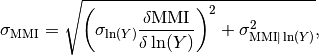
where 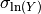 is the standard deviation of the natural log of the ground motion as given by the GMPE, 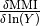 is the derivative of the GMICE at the value of 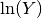 from the GMPE, and 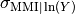 is the standard deviation of the ground motion to MMI conversion as given by the GMICE.
Because many GMICEs are bilinear (see, for example, Figure 3), the predicted intensities and their standard deviations can contain some features that are less than ideal. For instance, Figure 4 shows the mean intensity from a VirtualIPE of the Abrahamson et al (2014) and the Chiou and Youngs (2014) GMPEs combined with the GMICE of Worden et al. (2012). The MMI values display a distinct change in slope as the relation reaches the lower intensities. This is due to the different slopes of the two lines of the bilinear relationship. More significantly, Figure 5 displays a dramatic drop in the standard deviation at the point where the two lines of the bi-linear relationship meet. Neither of these features is likely physical, but are a consequence of the bilinear form of the GMICE.

Figure 3: MMI vs. PGV for the Worden et al. (2012) GMICE. Note the bi-linear relationship of the three GMICE plotted. (Figure from Worden et al. (2012).)
Figure 4: The mean MMI field for a VirtualIPE comprised of a 50-50 combination of the Abrahamson et al (2014) and the Chiou and Youngs (2014) GMPEs, and the Worden et al. (2012) GMICE.
Figure 5: The standard deviation of the MMI field for a VirtualIPE comprised of a 50-50 combination of the Abrahamson et al (2014) and the Chiou and Youngs (2014) GMPEs, and the Worden et al. (2012) GMICE.
2.5.4. Cross-correlation Functions¶
There is, as yet, a very limited number of cross-correlation functions in the literature. Currently, ShakeMap depends primarily on the cross-correlation functions defined by Loth and Baker (2013). These functions provide spatial cross-correlations among spectral accelerations (SA) at various periods. ShakeMap, however, works with several IMTs in addition to the SAs, and for which no cross-correlation models currently exist. Thus, we make several approximations for the purpose of applying the Loth and Baker relations to the non-SA IMTs:
- PGA is treated as 0.01 second SA.
- PGV is treated as 1.0 second SA.
- MMI is treated as 1.0 second SA.
Again, these approximations are made for the purpose of computing the cross-correlations only. They do not affect other aspects of the treatment of these IMTs.
While not ideal, we feel that these approximations are reasonable. PGA is typically the product of the high-frequency part of a seismogram’s spectrum, and PGV tends to derive from a longer-period portion of the signal, and is often associated with 1.0 second SA. MMI, while it’s correlation structure is unknown, is closely correlated with PGV.
As suitable cross-correlation functions become available for additional IMTs, we will incorporate them into ShakeMap.
2.5.5. Data Handling and Outliers¶
As a general rule, ShakeMap assumes that by the time data reach model they have undergone fairly rigorous quality control. It is assumed that the seismic networks that produce the data maintain checks and quality assurance protocols, and that the ground-motion amplitudes ShakeMap receives can be assumed to be valid. That said, it is inevitable that the occasional errant amplitude will make it through. ShakeMap’s primary means of dealing with these amplitudes is through the flagging of outliers.
Outlier flagging works through an operator-configurable
parameter max_deviation in the outlier sub-section of
the data section of model.conf). Essentially,
for each ground
motion in the input, a prediction is calculated with the
configured GMPE. If the observed amplitude is greater than
max_deviation standard deviations above or below the
prediction, then that observation is flagged as an
outlier and is not used in further processing.
Outlier flagging is suspended in cases where the magnitude
of the earthquake exceeds the operator-configurable value
of max_mag (also in the outlier sub-section of the data
section of model.conf), and no finite rupture model
is available. The thinking here is that for larger earthquakes,
the large size of the rupture makes it difficult to know
the rupture distance, and the prediction becomes much less
reliable. While ShakeMap attempts to compensate for the
absence of a rupture model (see Finite-rupture Approximations,
it is still desirable to turn
off the outlier flagging at larger magnitudes. If a
rupture model is available, the max_mag parameter has no
effect.
Outlier flagging is performed on a per-IMT basis. Thus, for example, if a station’s PGA value is flagged, the other IMTs from that station are unaffected (unless they, too, are flagged).
2.5.6. Interpolation¶
Worden et al. (2018) discusses the application of the MVN to the interpolation of ground motions. Here, we discuss some specific details of its implementation within ShakeMap.
2.5.6.1. Computation¶
The conditional MVN can be summarized as a situation in which we have a variable of interest 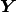 where we wish to compute predictions at a set of M ordinates (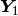) conditioned upon a set of N observations (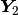). We can treat these as a vector with two components:
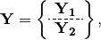
with mean:
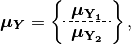
and covariance:
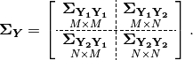
where 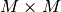,  , 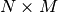, and
, 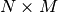, and
 give the dimensions of the partitioned arrays. The
mean values may be taken from a GMPE or other ground motion model. The
elements of the covariance matrix are given by:
give the dimensions of the partitioned arrays. The
mean values may be taken from a GMPE or other ground motion model. The
elements of the covariance matrix are given by:
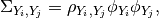
where
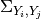 is the element of the covariance matrix at
position (i, j),
 is the correlation between the elements
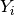 and 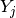 of the vector , and
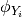 and 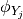 are the within-event standard
deviations of the elements and .
is the correlation between the elements
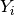 and 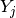 of the vector , and
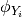 and 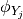 are the within-event standard
deviations of the elements and .
Given a set of observations 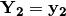, we define a vector of residuals

The distribution of 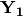, given that , is multivariate normal with mean
(1)¶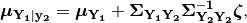
and covariance
(2)¶
The constituents of  may be a particular IMT at multiple
locations, multiple IMTs at a given location, or both: multiple IMTs at
multiple locations. In a ShakeMap, we may have an output grid of Q
locations and wish to compute this output grid for P different IMTs.
Thus,
may be a particular IMT at multiple
locations, multiple IMTs at a given location, or both: multiple IMTs at
multiple locations. In a ShakeMap, we may have an output grid of Q
locations and wish to compute this output grid for P different IMTs.
Thus,  . Similarly, the N constituents of
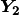 consist of a number of IMTs at each of a number of
observation locations. Thus, as long as the elements of the covariance
matrix
. Similarly, the N constituents of
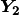 consist of a number of IMTs at each of a number of
observation locations. Thus, as long as the elements of the covariance
matrix  can be computed, Equations (1)
and (2) could be computed just once to provide the
complete grids for all of the output IMTs. In most cases, however,
this approach is impractical and inefficient.
can be computed, Equations (1)
and (2) could be computed just once to provide the
complete grids for all of the output IMTs. In most cases, however,
this approach is impractical and inefficient.
We note that in Equation (1) there is no interdependence
on the computed elements of  .
That is, the vector of output ordinates may be
divided in any
convenient way, the elements of
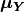 and adjusted accordingly,
and the computations can proceed independently. The
same cannot be said for Equation (2), where the full
matrices must be used in order to compute the full covariance matrix
.
That is, the vector of output ordinates may be
divided in any
convenient way, the elements of
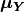 and adjusted accordingly,
and the computations can proceed independently. The
same cannot be said for Equation (2), where the full
matrices must be used in order to compute the full covariance matrix
 .
.
For even a small Shake map of 200 by 300 grid points, the
matrix 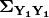 becomes 60,000 by 60,000
elements. In a typical ShakeMap run, at least 6 output IMTs are
computed, making this matrix 36 times larger. This large size makes
the computation of
impractical for
most situations. For ShakeMap uses, however, we are only interested
in the diagonal
elements of ,
that is, the variances of the conditional means. In this case, we
can modify Equation (2) by making the following
definitions:

(that is, 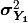 is a column vector formed from the diagonal elements of ) and
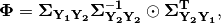
where  represents the element-by-element product.
represents the element-by-element product.
Then the conditional variances may be found by:

where  is a column vector of ones.
is a column vector of ones.
As with the conditional mean, this formulation is insensitive to any
particular partitioning of the vector. For ShakeMap
purposes, it is both convenient and computationally efficient to process
each row of the output grid for each IMT separately.
2.5.6.2. IMT Selection¶
In a typical ShakeMap operational environment, it is common for each seismic station to produce a number of IMT observations, some of which may be flagged as outliers. In addition, in ShakeMap V4, the output IMTs may or may not correspond to any of the input IMTs. The MVN approach described in Worden et al. (2018) would allow all of the input IMTs to be used in the production of each output IMT. Such an approach, however, is inefficient.
If the output IMT is represented in the set of input IMT residuals, then any additional IMT residuals at that same site are mathematically irrelevant. Since the computational effort of the MVN process increases largely in proportion to the square of the number of residuals, adding unnecessary residuals only slows the process, without adding additional accuracy.
Similarly, we have found that in cases where the output IMT is not represented in the set of IMT residuals at a station, then using the two IMTs that “bracket” the output IMT is sufficient to define the observation point. For instance, if the output IMT is 2.0 second SA, and 0.3, 1.0, and 3.0 second SA are available in the input, then using the 1.0 and 3.0 second residuals is sufficient. (In situations where the output SA is higher (or lower) than the highest (or lowest) SA in the input, we choose the single IMT at the highest (or lowest) SA.)
Figure 6 illustrates this point. Conditional mean spectra were computed for two sets of points. One set had SA observations at three periods (0.3, 1.0, and 3.0 seconds), and the other set had observations at seven periods (0.02, 0.06, 0.3, 1.0, 3.0, 5.0, and 9.0 seconds). The observations the two sets had in common (0.3, 1.0, and 3.0 seconds) were constrained to be the same. The figure shows that in the shared regions (between 0.3 and 1.0 seconds, and between 1.0 and 3.0 seconds), there is very little difference between the conditional spectra. This point is reinforced by Figure 7, which shows the standard deviations of the two sets of conditional spectra. While the 7-point spectra is better constrained overall, in the area of overlap (again, between 0.3 and 1.0 seconds, and between 1.0 and 3.0 seconds) there is virtually no difference between the spectra. These figures were generated using the Chiou and Youngs (2014) GMPE and the Baker and Jayaram (2008) spectral correlation function. The odd kink in the mean plots at around 0.2 seconds is a result of the specifics of the correlation function.
Figure 6: Conditional spectra for two sets of conditioning observations: One set at three periods (0.3, 1.0, and 3.0 seconds), and the other set at seven periods (0.02, 0.06, 0.3, 1.0, 3.0, 5.0, and 9.0 seconds). The gray line is the spectrum of the GMM. The solid black line is the spectrum conditioned on 3 periods; the dashed line is the spectrum conditioned on 7 periods. The circles represent the periods and amplitudes of the conditioning observations.
Figure 7: The standard deviations of conditional spectra for two sets of conditioning observations: One set at three periods (0.3, 1.0, and 3.0 seconds), and the other set at seven periods (0.02, 0.06, 0.3, 1.0, 3.0, 5.0, and 9.0 seconds). The gray line is the standard deviation of spectrum from the GMM. The solid black line is the standard deviation of the spectrum conditioned on 3 periods; the dashed line is the standard deviation of the spectrum conditioned on 7 periods. The circles represent the periods and amplitudes of the conditioning observations.
2.5.6.3. Event Bias¶
Prior to computing the MVN as described in the section Computation above, ShakeMap computes the event term (the “bias”). Worden et al. (2018) discusses the calculation of the event term in more detail.
The bias at site m for IMT i is given by:
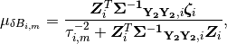
where
 are the total residuals of IMT i (or its closest surrogates, as discussed
in the section IMT Selection, above),
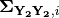
is the covariance matrix of the within-event standard deviations of
that particualr set of residuals,
are the total residuals of IMT i (or its closest surrogates, as discussed
in the section IMT Selection, above),
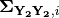
is the covariance matrix of the within-event standard deviations of
that particualr set of residuals,
 is the between-event standard deviation of IMT i at site m, and
is the between-event standard deviation of IMT i at site m, and
 is the correlation between IMT i and the IMTs comprising the rows
of multiplied by the “omega factors”,
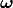,
of the residuals [for a discussion, see
Worden et al. (2018)].
is the correlation between IMT i and the IMTs comprising the rows
of multiplied by the “omega factors”,
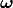,
of the residuals [for a discussion, see
Worden et al. (2018)].
The variance of the bias terms is given by:
(3)¶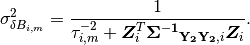
In the ShakeMap implementation, the residuals used to compute the bias
are limited to a subset within a distance of max_range km from the
source (max_range is found in the bias sub-section of the
modeling section of model.conf). As with the outlier flagging, the
operator may
also set a max_mag for the bias (also found in the bias
sub-section of model.conf). If an earthquake exceeds max_mag,
and no rupture model is available, the bias computations will be
skipped.
The calculation and application of the bias may be turned off by
setting the parameter do_bias (found in the bias sub-section
of the modeling section of model.conf) to False.
2.5.6.4. Updating the Within-Event Standard Deviation¶
Once the bias calculation has been performed, the residuals may be computed from the biased estimates of the ground motions. Similarly, the adjusted within-event standard deviation of the residuals may be calculated:
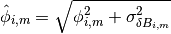
where
 is the adjusted within-event standard deviation
of IMT i at site m,
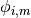 is the within-event standard deviation of IMT i
at site m, and
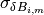 is the standard deviation of the bias
as calculated by Equation (3).
is the adjusted within-event standard deviation
of IMT i at site m,
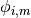 is the within-event standard deviation of IMT i
at site m, and
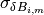 is the standard deviation of the bias
as calculated by Equation (3).
With the adjusted within-event residuals, the elements of the covariance matrix are given by:
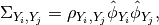
where the variables are defined as they were in the section
Computation, but with
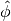 replacing  .
.
2.5.6.5. Weighting of Residuals¶
As discussed in Worden et al. (2018) uncertain data can be accommodated in the MVN structure through the use of the “omega factors”. In our implementation, these factors are based on the adjusted within-event standard deviation computed for each residual:

where
 is the additional standard deviation of the
observation of IMT i at site m. These factors are then applied to the
covariance matrix and the residuals, as discussed in Worden et al.
Analogous factors, using the unadjusted within-event standard deviation
() rather than the adjusted standard deviation
() are used to modify the
vectors and residuals when computing the bias.
is the additional standard deviation of the
observation of IMT i at site m. These factors are then applied to the
covariance matrix and the residuals, as discussed in Worden et al.
Analogous factors, using the unadjusted within-event standard deviation
() rather than the adjusted standard deviation
() are used to modify the
vectors and residuals when computing the bias.
The additional standard deviation of a residual (i.e.,
) can come from a number of
sources. Observations converted from one IMT to another (via, for example,
the GMICE) will carry the additional uncertainty of the conversion process.
Intensity observations themselves – such as those obtained through the
“Did You Feel It?” system – have an inherent uncertainty due to the
averaging process in their derivation.
This standard deviation may be specified by the operator in the input file. If it is not specified, ShakeMap assigns a default standard deviation to intensity measurements of 0.3 intensity units. Other observations may have non-zero uncertainty for reasons of instrument or site characteristics. This uncertainty may be specified in the input file using the ln_stddev attribute of the amplitude tag.
2.5.6.6. Summary¶
The interpolation process begins with the calculation of the bias, where the covariance matrix, 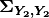, and the “omega factorrs”, , are assembled from the unadjusted within-event standard deviations, and the residuals, 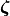, are the total residuals computed from the unbiased estimates.
Once the bias values and the adjusted within-event standard deviations are known, the covariance matrix and the “omega factors” can be re-computed (using the adjusted within-event standard deviations), and the residuals are recomputed from the bias-adjusted estimates. These updated factors (including the bias-adjusted estimates) are then used in the MVN procedure as described in section Computation.
2.5.7. Finite-rupture Approximations¶
In situations where no finite rupture model has been specified, ShakeMap will approximate distances (and adjust the uncertainties of predicted ground motions) using the point-source to finite-rupture equations developed by Thompson and Worden (2018)
2.5.8. Output: Points vs. Grids¶
The typical application of ShakeMap is to compute ground motions
over a gridded region. The grid is centered on the epicenter of
the earthquake, and its extent is set automatically. The default
configuration tends to err on the side of larger maps, however
the operator may control the parameters used to determine the
map extent through the extent.conf configuration file. Alternately,
the operator may set fixed bounds for maps through the extent
parameter in the prediction_location sub-section of the
interp section in model.conf (which, like all parameters in
model.conf may be set globally or on an event-by-event basis).
ShakeMap can also be configured to compute ground motions for
an arbitrary set of points. The operator may create a file
containing rows of latitude, longitude, Vs30, and a location or facility
identifier (with the columns being separated by whitespace).
The file may then be specified with the file parameter in
the prediction_location sub-section of the interp section
of model.conf.
2.5.9. Performance Considerations¶
The run time of ShakeMap is most strongly controlled by the number
of input seismic stations (and macroseismic observations), the size
of the output grid, and the number of output IMTs. While the Numpy
code that does the majority of the computations is highly optimized
on most systems (including running on multiple cores), it may be
possible to improve the performance of ShakeMap on some systems
by setting the
max_workers parameter in the system section of model.conf.
Setting max_workers to a value greater than one will tell
ShakeMap to spin off separate threads for the output IMTs (thus,
there is no point in setting this value to anything larger than
the number of output IMTs.) There is, however, an interaction with
the BLAS libraries underlying Numpy. If ShakeMap produces an
error of the type:
BLAS : Program is Terminated. Because you tried to allocate
too many memory regions.
then max_workers should be reduced (or, you can obtain or
compile BLAS libraries that are reentrant safe – a topic which is
far beyond the scope of this manual.)

{kind=link}
{kind=link}
{kind=link}
{kind=link}
{kind=link}
{kind=link}